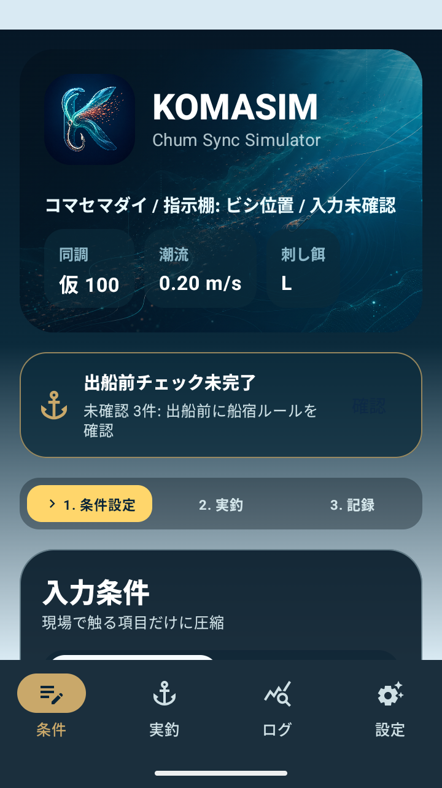
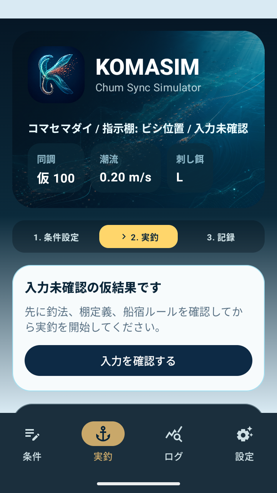
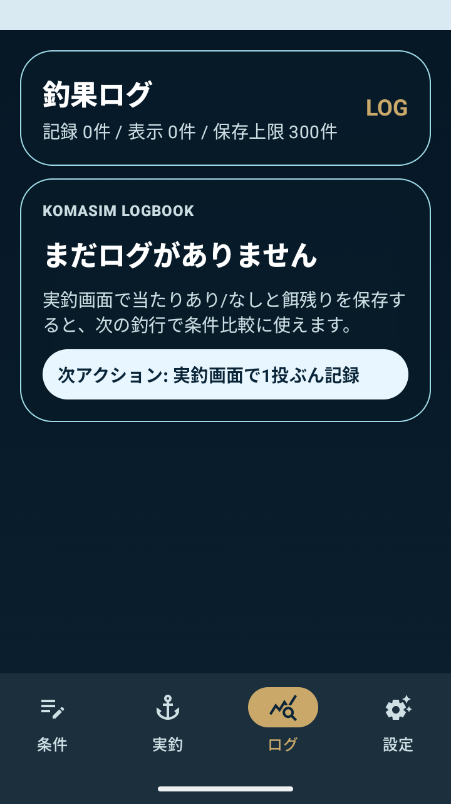
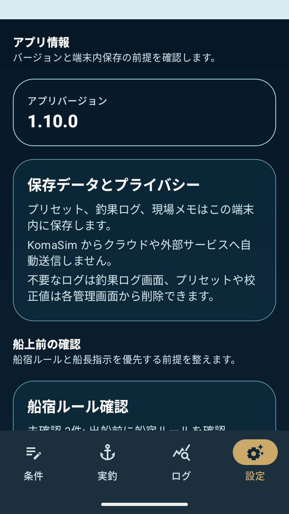

棚到達と同調スコア
付け餌が狙い棚へ届くまでの目安時間と、コマセ帯との同調度を表示します。
ビシ釣り・コマセワーク判断支援アプリ
条件設定、実釣、釣果ログ、設定を切り替えながら、コマセ、付け餌、仕掛けの沈下と横流れを船上で読みやすく整理します。
Features
船上で必要な情報を、入力、実釣、ログ、設定の流れに分けて確認できます。
付け餌が狙い棚へ届くまでの目安時間と、コマセ帯との同調度を表示します。
投入後の待ち時間、誘い開始、回収目安を大きく表示し、タイマー中の画面維持も選べます。
当たりあり/なし、餌残り、空針、かじられ、取られないをワンタップで記録できます。
針自重、餌重量、コマセ沈降速度を現場値として保存し、次回の同じ条件へ反映します。
よく使う仕掛け条件を保存し、読み込み前に棚・潮・針・餌の差分を確認できます。
プリセット、釣果ログ、校正値をJSONとしてコピー、共有、選択読み込みできます。
Screens
DRIFIXと同じ粒度で、KomaSimの主要UIを「何を見る画面か」「何を入力・判断するか」に分けて説明します。

釣法、棚、船宿ルール、潮流、針、餌、ハリス、現場校正値をまとめて入力します。基本条件を先に出し、詳細条件は必要なときに展開します。

同調スコア、待ち時間、実釣レンジ、次の一手、注意点を確認します。入力未確認時は仮結果として表示し、条件確認へ戻る導線を出します。

当たり有無、餌残り、港/船、投入後時刻、メモを保存し、次回の条件比較に使います。ログがない状態でも次アクションを表示します。

アプリバージョン、端末内保存、船上前チェック、バックアップ、校正値管理を確認します。クラウドへ自動送信しない前提もここで確認できます。
Operation Inputs
条件設定は単なるフォームではなく、基本条件、潮流と仕掛け、現場校正、出船前チェック、プリセット、実釣ログ入力に分けています。
最初に釣法と棚の意味を揃えます。
実釣中に変わりやすい条件を素早く調整します。
釣り場で得た実測や感触を次の計算に反映します。
船宿ルールや船長指示を優先するための確認欄です。
よく使う条件を保存し、読み込み前に差分を確認できます。
一投ごとの結果を次回の条件比較へつなげます。
Use Cases
KomaSimは、正解を決める道具ではなく、現場判断を整理するためのメモ兼シミュレーターです。
船長指示棚、ハリス長、針、餌サイズ、潮流を入れて、想定の待ち時間と落とし込み量を確認します。
タイマー経過を含めて当たりや餌状態を保存し、次の一投で待ち時間や誘いを見直します。
港、船、船長指示、餌状態、ヒット傾向をまとめ、次回に試すことを残せます。
FAQ
アプリの性格、データの扱い、プライバシーポリシーURLについて、よくある確認事項をまとめています。
いいえ。KomaSimは潮流、棚、仕掛け条件、餌状態を整理するためのシミュレーターです。実際の釣果や安全を保証するものではなく、船長指示、海況、現場判断を優先してください。
現在のKomaSimは、プリセット、釣果ログ、校正値をアプリが自動で外部送信する機能を持ちません。共有やバックアップをユーザーが選択した場合のみ、Androidの共有機能を通じて内容が渡されます。
正式URLは https://tws19820925.github.io/KOMASimulator/privacy_policy.html です。短いURLとして /privacy.html も同じページへ転送します。
ページ下部に記載している Arcadia_Labs の連絡先メールアドレスまでお問い合わせください。
Privacy Policy
以下は、KomaSimアプリにおける情報の保存、利用、共有、削除について説明するプライバシーポリシーです。 Google PlayなどからこのURLに直接アクセスした場合でも、本ポリシーをこのページ内で確認できます。
KomaSimは、主に次の情報を端末内に保存します。
現在のKomaSimは、プリセット、釣果ログ、校正値をアプリが自動で外部送信する機能を持ちません。 結果共有やバックアップ共有を選んだ場合のみ、Androidの共有機能を通じて、ユーザーが選択したアプリやサービスへ内容が渡されます。
KomaSim本体は、現時点でアプリ独自のアカウント作成、広告配信、アクセス解析SDK、クラッシュ解析SDKを組み込んでいません。 ただし、Google Playから入手した場合、配信や購入、レビュー等に関する情報はGoogleの規約とポリシーに従って扱われます。
釣果ログ、プリセット、校正値、共有用バックアップキャッシュは、アプリ内の各管理画面から削除できます。 アプリをアンインストールすると、端末内に保存されたアプリデータも削除されます。
KomaSimは釣果を保証するアプリではありません。船長・船宿の指示、投入ルール、落とし込み制限、安全確認を常に優先してください。 潮、風、糸ふけ、餌の形、船の流し方により、表示結果は変動します。
本ポリシーに関するお問い合わせ先は次のとおりです。
Arcadia_Labs
drifix.fishingseatadvisor@gmail.com